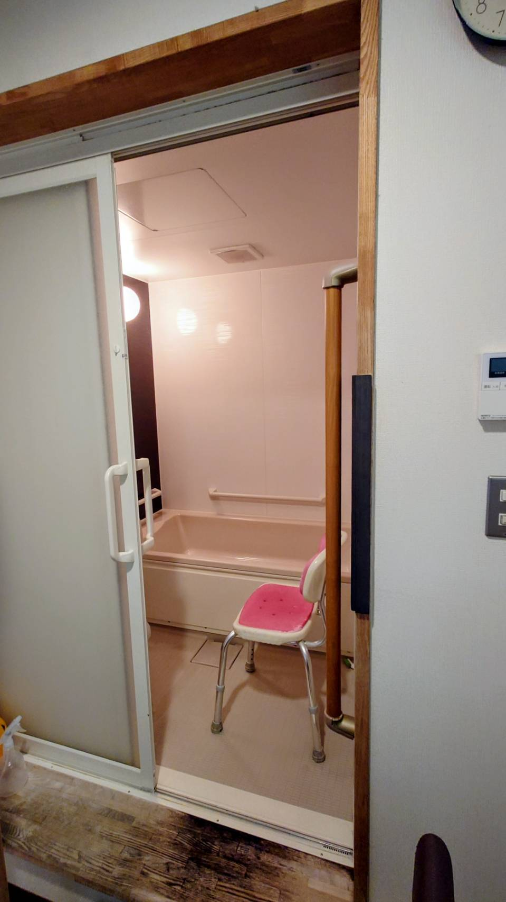

こんな方へ
- 足腰の衰えが気になる
- 日中ひとりで過ごすのが心配
- 無理なく人と話す機会を持ちたい
家で運動する機会が減り、歩いて買い物や家事を続けたい方。誰かと話す時間がほしい方に向く場所です。
スタッフと利用者さまが親しみやすく、気兼ねなく声をかけ合える、憩いの場を目指しています。
予定や体力に合わせて、通い方を選べます。空き状況は見学前に店舗へご確認ください。
運動、入浴、昼食、交流を組み合わせて過ごすコースです。日中をしっかり使いたい方に。
短い時間で運動や外出のきっかけをつくるコースです。半日をほかの予定に使いたい方に。

機械浴が必要な方も、まずは状態と希望を伺います。ご自宅からの移動が負担な方も、送迎の範囲を含めてご相談ください。
増泉店の入力表から読み込みます。利用開始日は電話で最終確認をお願いします。
| 曜日 | 施設の空き | お風呂の空き |
|---|
2026年6月版の重要事項説明書をもとに計算します。利用時間は実際の利用内容に合わせてお選びください。
空き状況、利用時間、入浴、送迎の条件をお電話で確認できます。